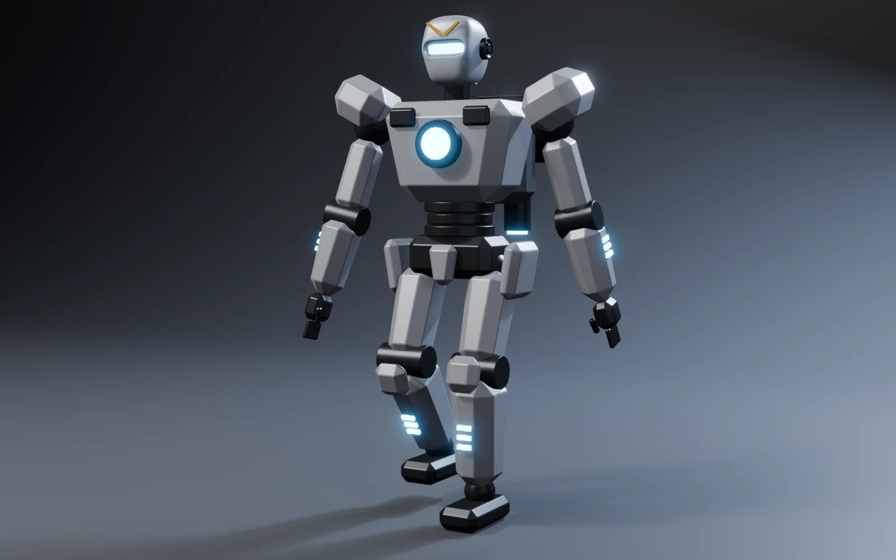
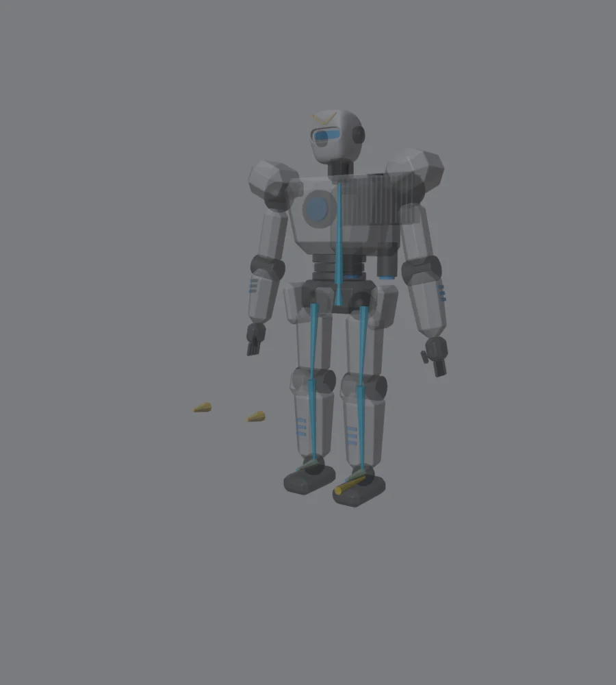
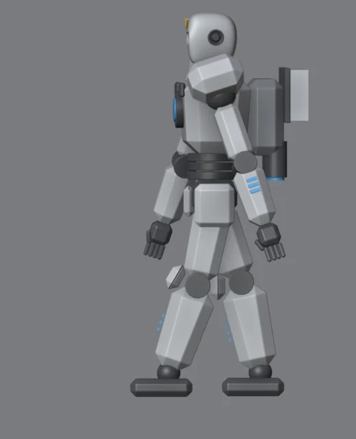
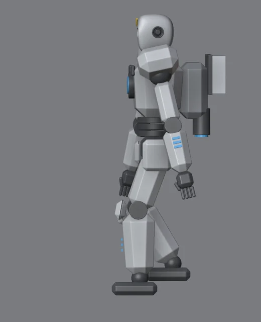
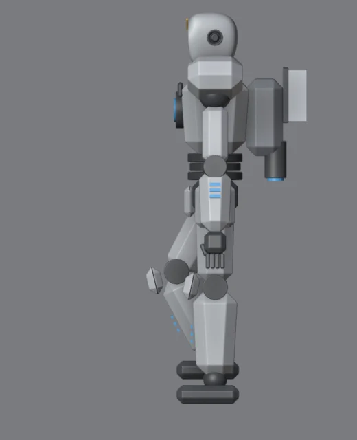
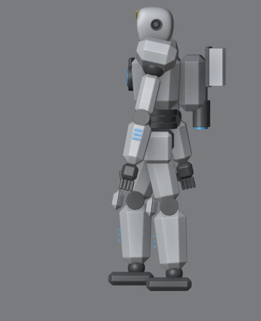

Lo que vas a forjar // objetivo
Estos son 8 de los 24 fotogramas del ciclo, renderizados en Blender y reproducidos aquí en bucle.

FK, IK y rig rígido // concepto
Rig rígido
Cada pieza del robot sigue a un hueso sin deformarse (Bone parent). No hace falta pintar pesos como en un personaje orgánico.
FK
Forward Kinematics: giras cada hueso en cadena (muslo, luego espinilla…). Ideal para brazos que se balancean.
IK
Inverse Kinematics: mueves el pie y la pierna se dobla sola. Imprescindible para que los pies no resbalen al caminar.
El esqueleto

- Shift+A → Armature. En modo edición, coloca el hueso
caderaen la pelvis y extruye (E) eltorsohacia arriba. - Pierna izquierda:
muslo.Ldesde la cadera hasta la rodilla,espinilla.Lhasta el tobillo ypie.Lhacia delante. Dobla la rodilla un poco hacia delante (unos centímetros): así el IK sabe hacia dónde doblar. - Nombra con
.Ly luego selecciona esos huesos →Armature → Symmetrize: aparece la pierna.R. - Controles (sin padre, o hijos de un hueso
raizen el suelo):pie_ik.L/.Ren los tobillos ypolo.L/.Rdelante de las rodillas.
Emparentar las piezas
- Selecciona las piezas del muslo, luego el armature, entra en Pose Mode (Ctrl+Tab), haz clic en el hueso
muslo.Ly pulsa Ctrl+P → Bone. - Repite con cada grupo: espinilla (con rodillera y luces), pie, cadera (pelvis y faldones) y torso (pecho, abdomen, cabeza y mochila).
- Los brazos pueden seguir con sus Empties del módulo 9: emparenta esos Empties con el hueso
torso.
Comprueba antes de seguir: en Pose Mode, gira el torso con R. Si alguna pieza se queda atrás, no está emparentada. Alt+R devuelve el hueso a su sitio.
IK en las piernas
- Pose Mode → selecciona
espinilla.L→ Bone Constraints → Inverse Kinematics. - Target: el armature, Bone:
pie_ik.L. Pole Target: el armature, Bone:polo.L. Chain Length: 2 (espinilla y muslo). - Si la rodilla gira hacia un lado, ajusta Pole Angle: −90° suele ser el bueno.
- En
pie.L: constraint Copy Rotation delpie_ik.L, para que el pie se quede plano en el suelo. - Mueve
pie_ik.Lcon G: la pierna se dobla sola.
Las 4 poses clave




Todo ciclo de caminar se construye con estas cuatro poses, repetidas para cada pierna: contacto → bajada → paso → subida, y otra vez contacto con la pierna contraria (f13). Con 24 fotogramas por ciclo, a 24 fps, el robot da 2 pasos por segundo.
Animar y hacer bucle
- En la línea de tiempo: Start 1, End 24.
- Fotograma 1: coloca
pie_ik.Ldelante ypie_ik.Rdetrás, apoyados. Selecciónalos, pulsa I → Location. - Fotograma 13: al revés. Fotograma 7: el pie izquierdo apoyado bajo el cuerpo y el derecho levantado pasando por debajo. Fotograma 19: lo contrario. I en cada uno.
- Fotograma 25: copia la pose del 1 (en el Dope Sheet, duplica la clave con Shift+D).
- Graph Editor → selecciona todas las curvas →
Channel → Extrapolation Mode → Make Cyclic. La animación se repite sin fin.
Los pies no deben resbalar: mientras un pie está en el suelo (de f1 a f13 el izquierdo), tiene que ir hacia atrás a velocidad constante. En el Graph Editor, esa parte de la curva debe ser una recta. Si es una curva, el pie patina.
Brazos, cadera y torso: la vida
- Cadera: baja 3–4 cm en las bajadas (f4 y f16) y sube 2 cm en las subidas (f10 y f22). Es lo que da peso.
- Brazos: se balancean al contrario que las piernas. Pierna izquierda delante, brazo izquierdo atrás (±18°).
- Torso: un leve giro (±4°) siguiendo los hombros.
Un robot puede ser «robótico»: menos balanceo de brazos y pasos más cortos y secos (interpolación Linear o Constant) dan un caminar mecánico. Más balanceo y curvas suaves, uno más humano. Es una decisión de personaje.
Renderizar el vídeo
- Output Properties → File Format: FFmpeg Video, Container MPEG-4, códec H.264. Es gratis y está integrado en Blender.
- Frame Range 1–96 (4 ciclos) y Frame Rate 24.
Render → Render Animation(Ctrl+F12). Con EEVEE tardará minutos, no horas.